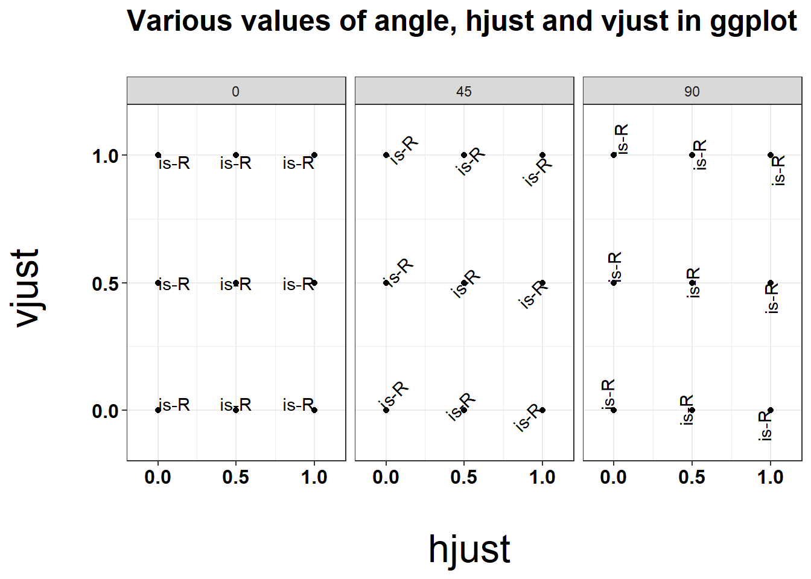
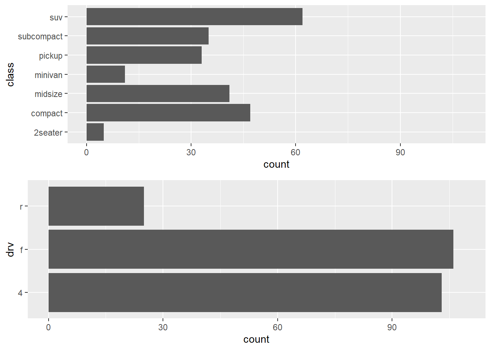
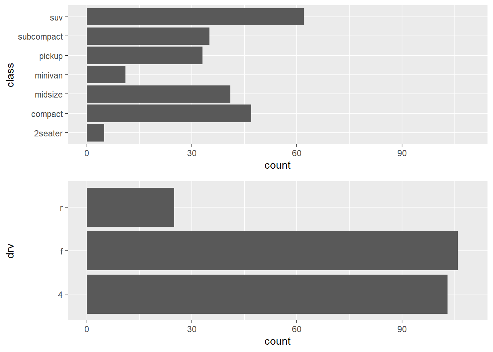
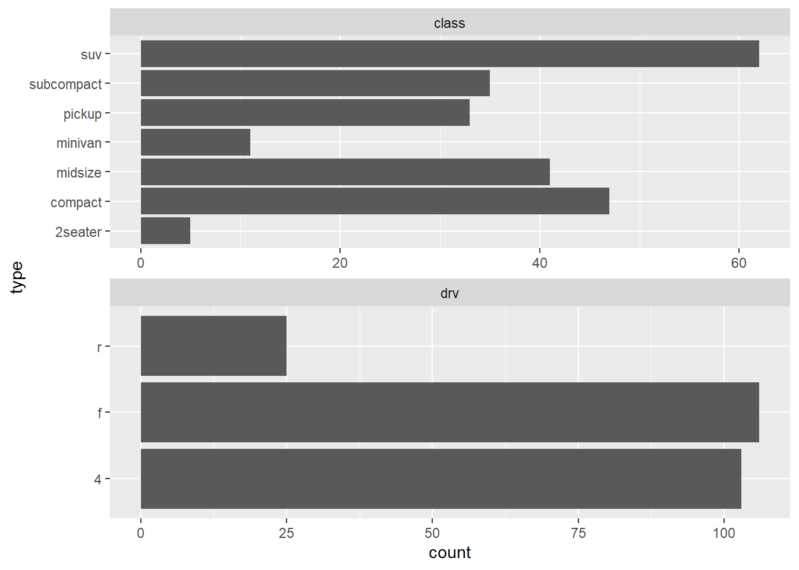
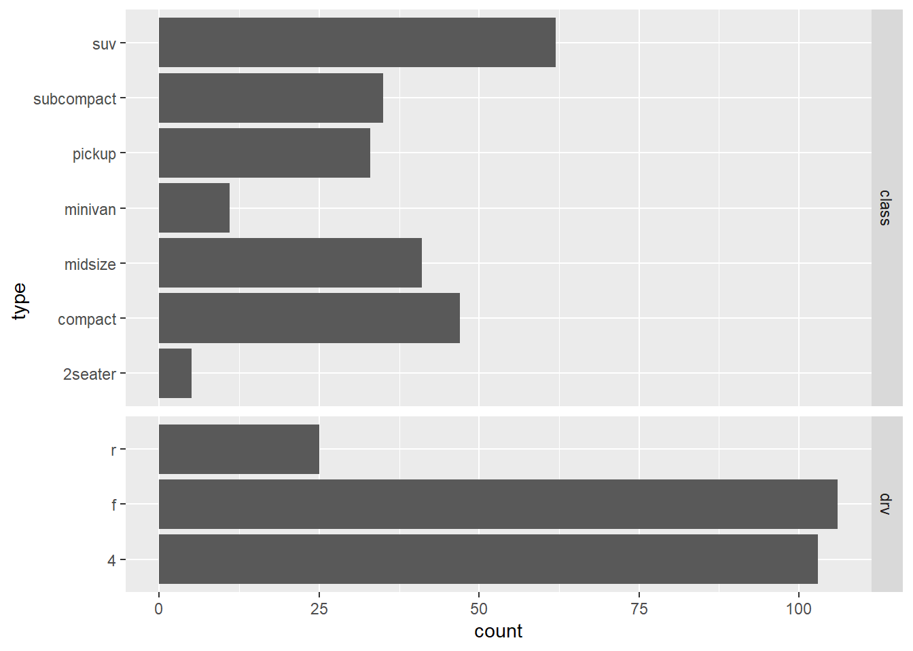
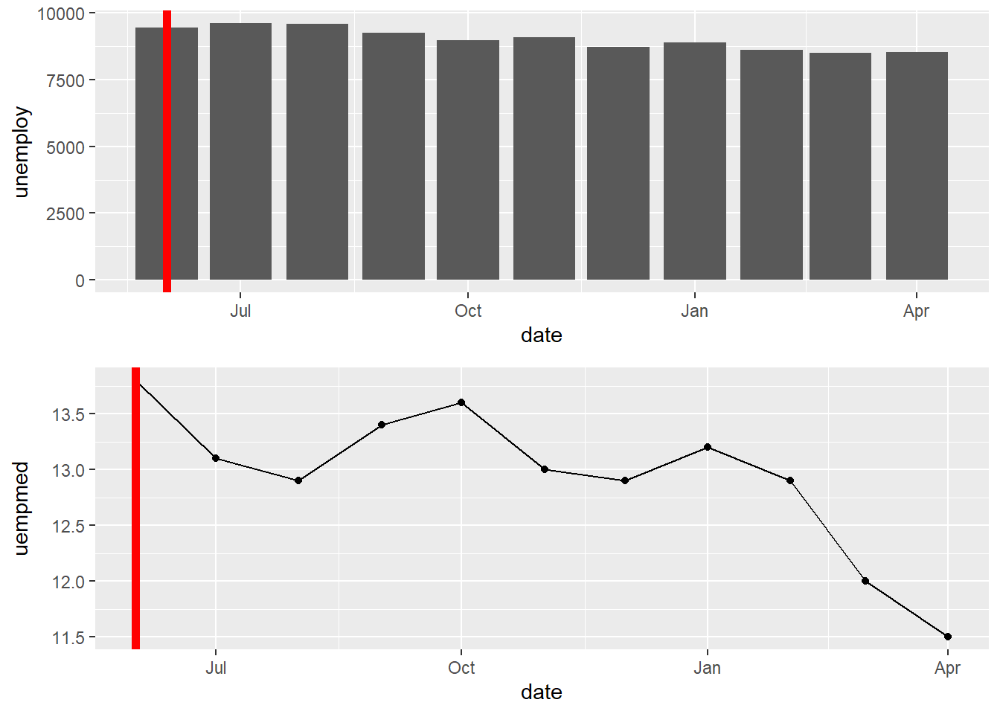
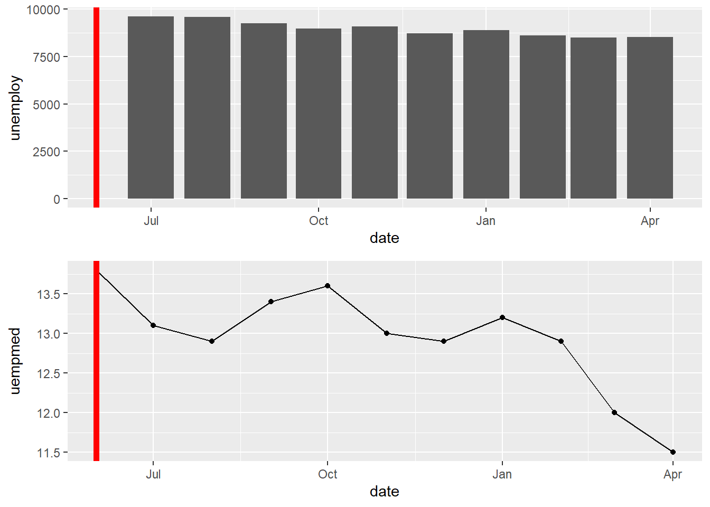
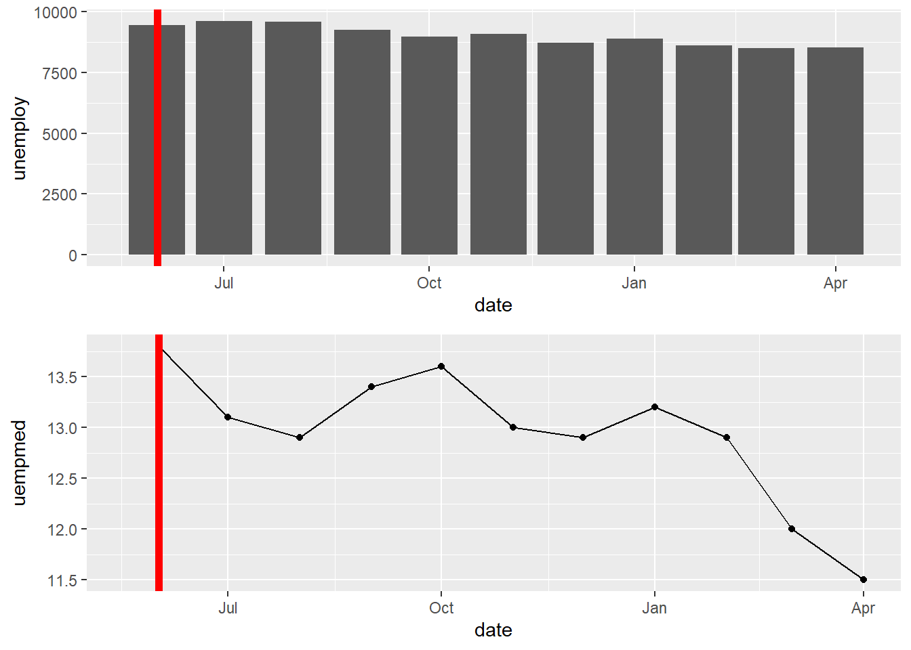
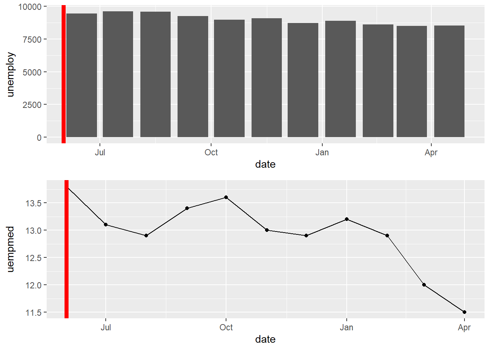

3 Data Viz
# load-packages
library(tidyverse)3.1 hjust and vjust
Why do I always forget the direction of these?
hjust: 0 = left-aligned, 0.5=center, 1 = right-aligned
vjust: 0 = top-aligned, 0.5=middle, 1 = bottom-aligned

Source: R bloggers: hjust and vjust and corresponding GitHub: cdesante/hjustvjust.r
3.2 Math Expressions in labels
3.4 Line up axes on stacked plots
Sometimes I’m working on two different types of plots (like a bar chart and a scatter plot) that happen to have the same x-axis. I want to line up these axes so that when the plots are stacked the values correspond to the same date.
3.4.1 gridExtra::grid.arrange() and cowplot::plot_grid()
# two different bar charts
A <- ggplot(mpg, aes(class))+geom_bar()+coord_flip()+ylim(0, 109)
B <- ggplot(mpg, aes(drv))+geom_bar()+coord_flip()+ylim(0, 109)Using grid.arrange command from the gridExtra package does not line up axes.
#axes don't line up
gridExtra::grid.arrange(A, B, ncol=1)
Use grid.draw command from the grid package.
Source
#make plots into Grobs (grid graphical object)
gA <- ggplotGrob(A)
gB <- ggplotGrob(B)
grid::grid.draw(rbind(gA, gB))
The cowplot::plot_grid() function allows you to line up plots by a specific axis.
cowplot::plot_grid(A, B, ncol = 1, align = "v")3.4.2 Facets
Another option is facet_wrap() or facet_grid(), which can works if the axes are the same for the different variables you want to compare, but be careful as facets are supposed to be comparing items with the same measurements.
tidy.df <- pivot_longer(mpg, c(class, drv), names_to = "category", values_to = "type")
ggplot(tidy.df, aes(type))+
geom_bar()+
coord_flip()+
facet_wrap(
~category
, ncol = 1
, scales = "free" #removes types from the axis if that category has 0 cars of that type
)
ggplot(tidy.df, aes(type))+
geom_bar()+
coord_flip()+
facet_grid(
category ~ .
, scales = "free" #removes types from the axis if that category has 0 cars of that type
, space = "free" #spaces based on number of obs (i.e. number of bars);
# rather than giving each facet equal sizing
)
3.4.3 Mixed Geoms (Bar + Scatter)
Scatter plots and bar charts will not line up automatically, even when using the grid.draw command detailed above. This is because their default limits are different given that the bar chart is centered on the value and the scatter plot is a single point on the value.
#work with smaller subset of data from economics, part of ggplot2 package
startdate <- "2014-06-01"
economics_small <- economics %>%
filter(date >= as.Date(startdate)) %>%
arrange(date)A <- ggplot(economics_small, aes(date, unemploy))+
geom_bar(stat="identity")+
geom_vline(xintercept = as.Date(startdate), color="red", size=2)
B <- ggplot(economics_small, aes(date, uempmed))+
geom_point()+geom_line()+
geom_vline(xintercept = as.Date(startdate), color="red", size=2)
gA <- ggplotGrob(A)
gB <- ggplotGrob(B)
grid::grid.draw(rbind(gA, gB)) #cowplot::plot_grid(A, B, ncol = 1, align = "v") produces same result 
In order to line the up there a a couple of options.
3.4.3.1 Fix xlim for all charts
If you make the limit the first x-value, the bar chart will not show up (remember it’s centered over the value).
A <- ggplot(economics_small, aes(date, unemploy))+
geom_bar(stat="identity")+
geom_vline(xintercept = as.Date(startdate), color="red", size=2)+
xlim(as.Date(startdate), NA)
B <- ggplot(economics_small, aes(date, uempmed))+
geom_point()+geom_line()+
geom_vline(xintercept = as.Date(startdate), color="red", size=2)+
xlim(as.Date(startdate), NA)
gA <- ggplotGrob(A) ## Warning: Removed 1 rows containing missing values (geom_bar).gB <- ggplotGrob(B)
grid::grid.draw(rbind(gA, gB))
This can be fixed by adding a half unit to the x-axis (i.e. having the lower limit be half-unit lower than smallest x-value). In this case the unit is a month, so a half-unit would be ~15 days.
HalfUnit <- .5*(economics_small$date[2] - economics_small$date[1])
HalfUnit## Time difference of 15 daysA <- ggplot(economics_small, aes(date, unemploy))+
geom_bar(stat="identity")+
geom_vline(xintercept = as.Date(startdate), color="red", size=2)+
xlim(as.Date(startdate)-HalfUnit, NA)
B <- ggplot(economics_small, aes(date, uempmed))+
geom_point()+geom_line()+
geom_vline(xintercept = as.Date(startdate), color="red", size=2)+
xlim(as.Date(startdate)-HalfUnit, NA)
gA <- ggplotGrob(A)
gB <- ggplotGrob(B)
grid::grid.draw(rbind(gA, gB))
3.4.3.2 Shift Bar chart to right
Bar charts are automatically centered over the x-value. Bar charts (and any geom object) can be shifted by using position - position_nudge()). The shift needs to be half a unit on the x-axis, again here it is monthly data so a half unit would be ~15 days.
Source
A <- ggplot(economics_small, aes(date, unemploy))+
geom_bar(stat="identity", position = position_nudge(x = as.vector(HalfUnit)))+
geom_vline(xintercept = as.Date(startdate), color="red", size=2)
B <- ggplot(economics_small, aes(date, uempmed))+
geom_point()+geom_line()+
geom_vline(xintercept = as.Date(startdate), color="red", size=2)
gA <- ggplotGrob(A)
gB <- ggplotGrob(B)
grid::grid.draw(rbind(gA, gB))
3.5 Links
- GitHub nprapps/dailygraphics | dailygraphics-templates/index.html
- Stack Overflow | Add a box for the NA values to the ggplot legend for a continous map
- Stack Overflow | ggplot - Multiple legends arrangement
- SAPE | ggplot2 Quick Reference: size
- ggplot2 | 11 Colour scales and legends, scale color binned
- Datanovia | How To Easily Customize GGPlot Legend for Great Graphics
- Albert’s Blog | Point Shape Options in ggplot
- R project | tableGrob - Displaying tables as grid graphics
- Statistics Globe | Remove Border of ggplot2 geom_label Text Annotation in R
- Statistics Globe | Extract Default Color Palette of ggplot2 R Package - Hex Codes;
scales::hue_pal()andscales::show_col() - {gridExtra}::tableGrob
- Stack Overflow | customize ggplot2 axis labels with different colors
- Stack Overflow | Consistently center ggplot title across PANEL not PLOT
- Stack Overflow | ggplot2: change colour of font and background in facet strip?
- Stack Overflow | Accents using ggplot2
- Stack Overflow | How does ggplot scale_continuous expand argument work?
- Stack Overflow | Using ggplot2, can I insert a break in the axis?
- Set Axis Break for ggplot2
- {cowplot}::add_sub | Add annotation underneath a plot
- R CHARTS | Slopegraph in ggplot2 with newggslopegraph
- GitHub hrbrmstr/statebins | Alternative to choropleths of US States